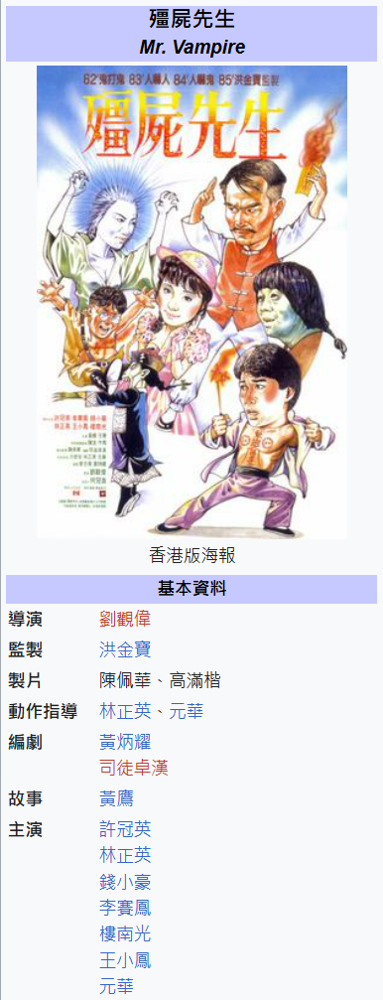
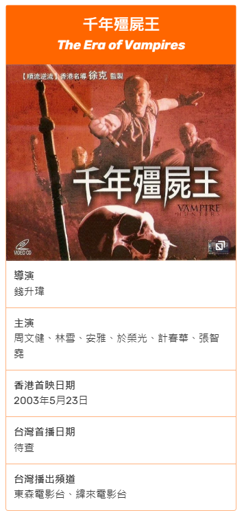
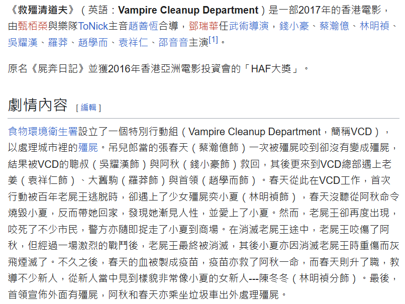

點擊上方的語言選單以切換語言
「殭屍」一詞在中文語境中，尤其是港產文化裡，與「吸血鬼」的形象有著複雜且微妙的關係。不同作品中，殭屍的定義和表現並不統一，常因文化傳承和翻譯差異，讓觀眾產生誤會。
傳統中國殭屍是死而復生的屍體，通常會直立行走，動作僵硬，以血為食，害怕符咒、糯米、桃木劍、黑狗血、陽光等；西方吸血鬼是以吸血維生的不死生物，擁有尖銳犬齒，害怕十字架、聖經、聖水、銀製品、陽光與蒜頭。
從本質上來說，「殭屍」和「吸血鬼」都屬於以血為食的「活死人」（undead），且兩者犬齒尖銳的形象也十分相似，加上兩者都怕陽光並總是晝伏夜出，這可能是為什麼在港產文化中，有時會用「殭屍」一詞來指代類似吸血鬼的存在。
以電視劇《我和殭屍有個約會》為例，片中人物口中的「殭屍」其實就是「吸血鬼」：
- 堂本真吾在教堂對況天佑說：「電影裡的殭屍真幸福，他們見到『十字架』就會化為烏有」
- 王珍珍問得知況天佑是「殭屍」後，問他是否怕「十字架」，而非「糯米」、「桃木劍」，或「符咒」
這種設定容易讓熟悉傳統殭屍形象的觀眾誤解殭屍與吸血鬼的界限，因為這裡的「殭屍」就是西方吸血鬼的另一個代稱。
另一個例子是電影《千機變》中，陳冠希對蔡卓妍說他是「殭屍」，但其實那也是吸血鬼，語境上的差異造成了混淆。
由於殭屍和吸血鬼本質上都是不死的死屍，港產片在英文翻譯時多用「vampire」（吸血鬼）作為「殭屍」的對應詞。例如：



這樣的翻譯方便國際觀眾理解，也反映了中西文化在恐怖元素上的互相借鑑和融合。
殭屍和吸血鬼雖然有不同的文化背景與傳說，但在現代流行文化中，尤其是港產影視裡，兩者的界線往往被模糊，甚至互換使用。這種現象既是文化交流的結果，也帶來了語義上的誤會。理解這些差異，有助於我們更深入欣賞不同文化對「不死生物」形象的獨特詮釋。